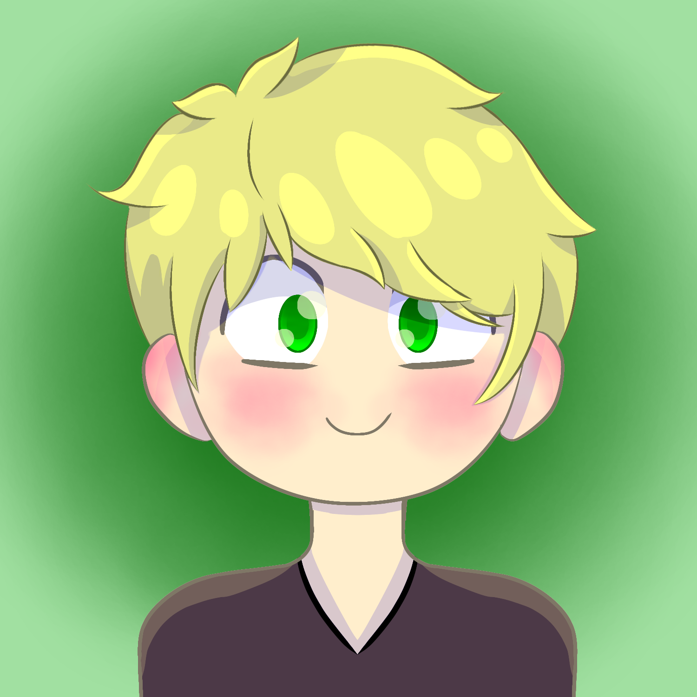
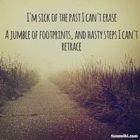

Samuel Broteez
Character Sheet
╭━━━━━━━━━━━━━━━━╮
Trigger Warnings
Depression, suicide, drug addiction
╰━━━━━━━━━━━━━━━━╯
Contents
I. Teaser
II. Basic info
III. Health and Abilities
IV. Appearance
V. Personality
VI. Self Perception
VII. Relations
VIII. Roleplay Info
“Your world's not falling apart, it's falling into place.”
Teaser
“Don't worry about me, I just want you to be happy.”
Basic Info
Birth Name
Samuel Amos Broteez
Current Name
Samuel Amos Broteez
First Name
Samuel
Meaning
"Name of God" or "Heard of God" ("God has Heard")
Significance
He thinks he has heard God. He believes that when he died for 3 minutes and 7 seconds, he saw God and heard him. He's been religious ever since
Middle Name
Amos
Meaning
"Burden" or "One who bears the burden"
Significance
He's been burdened with raising his little brother and consoling everyone around him while struggling to maintain a stable job because he has a reputation of a murderer even though he did nothing wrong. But as long as he can get Simon to live until he can go to college, then it will have been worth it. Because then at least Simon got to live to his potential
Last Name
Broteez
Nicknames
Sam
Reason
Shortened version of Samuel. This is what he's most commonly called
Sammy
Reason
Another version of Samuel, but he hates being called this. He thinks it sounds too childish
Samikins (Sam-i-kins)
Reason
His best friend thought it was a cute nickname. Sam does not like it
Biscuit
Reason
Because he's sweet uwu
Dozens of other Sam variations
Reason
Jacob is constantly coming up with new names he hates
Biological Gender
Male
Preferred Gender
Male
Pronouns
He / him / his
Sexual Orientation
Demi-sexual
Romantic Orientation
Bi-romantic
Often attracted to intelligence, so he's a bit sapio-romantic / sapio-sexual
Age
20
Birthday
January 1st
Zodiac Sign
Capricorn
Occupation
Official: He has this job that requires him to fill out paperwork to turn back in and get paid for. He doesn't question why his employer needs this, he just does it
Unofficial: He acts as a medical profession / doctor for those who can't afford the hospital
Where they live
Prismoria
Languages
English
Spanih
French
Dutch
A bit of German
“Just give me a week, that's all I need. We can fix this,
you just have to trust me.”
Health and Abilities
Physical Illnesses
None
Mental Illnesses
Depression
Triggers
Wolves
Addictions
Anti-depressants
Mutation / Power
Water Manipulation
How long have they had it
Since he was around 12
What are the limitations
In order to use his power, whatever he's trying to do must contain H2O

“I know it may feel like you're stranded in an endless ocean
with nobody to throw you a life jacket, but it doesn't have to be that way.”
Appearance
Height
5'5"
165.1 cm
Weight
118 lbs.
53.5239 kg
Skin color
Pale ivory
Hair color
Dirty blonde
Hair style
Curly / Wavy, but he always straightens it And he has a fringe
Eye color(s)
Bright green (Which he refers to as poison green)
Wings (Optional)
Type
Angel wings
Color
White
Size
12'6" per wing, 25' total wingspan
3.81 meter per wing, 7.62 meter total wingspan
Feel
Very, very, very soft. Heavenly soft. Like nothing you've ever felt before
Piercings
None
Scars
A slash going across his eye, which he covers up with makeup
Tattoos
None
Birthmark
None
Freckles
No
Glasses / Contacts
He has glasses, but he never wears them. He'd rather be partly blind.
Accent / Voice
Very soft and relaxing voice, it's easy to trust him and his gentle ways
By default, his laugh is really quiet or even silent. If he gets better mentally, then it can change and it just has an adorable sound
“I'm not cute, that's childish, and I'm certainly not a child.”
Personality
Closest Stereotype
Nerd
Overall Description
Sam is the nicest person you will ever meet. He is always willing to lend a hand and will always try to see the good in people. He will repeatedly give people another chance to redeem themselves, no matter how bad what they did before was. This does not apply to himself however. If he thinks that he did something bad, he will not forgive himself for it. It will seem like a much bigger mistake than it really was to him, in his mind it's blown way out of proportion. He needs someone to keep him grounded and remind him that things aren't as big as they seem (though he also finds it difficult to accept help from others). And if he can't handle his own thoughts, he will resort to drugs to block out the pain and get himself back together.
Despite sometimes not being able to grasp how important his actions are, he is very smart. He's a nerd, and he's proud of it. Sometimes, this can be really cute. If the right topic happens to be brought up, he will start fangirling over some biology thing or about a book he read fifteen times over. He doesn't notice that he's doing it, and he looks like a little kid when he does. Once he realizes, he will shut up and feel embarrassed about it.
Likes
Pastries. He really likes sweets. Not much more to say about it.
Biology and medicine. Every since he was ten, he wanted to be a doctor. He had a near death experience, the doctors who saved him were like angels to him and he wanted to be just like them. Medicine became his passion
Puppies. He's always wanted to get a puppy but has always been too worried about whether or not he'd be able to take care of it. He doesn't know if he'd be able to keep buying it food and whatnot for it to survive. But he does love puppies.
Dislikes
Anything that he considers to be childish. He had to start going to work and support a family by himself when he was 10. He stopped being a kid. But employers don't want to be paying a ten year old, that would just be stupid. Because of his age, it was very hard to make enough money to even be able to buy food. He hates being viewed as young or child-like because of this
Similar to the last one, he hates when people assume things based on ones appearance. He didn't look like a skilled intellect or anything when he was 10, he was 10 for Christ's sake. Nobody wanted to hire a stupid little kid. But when he started to make himself look older and more mature than he was, he started getting better results. But why should he have to change his outfit just to be hired? That in itself is stupid. He will never, well, he always tries not to judge someone based off of their looks, he tries his best to ignore any prejudice biases due to how someone appears on the outside. Someone also once said something that really stuck with him: "I care more about someone's personality. People aren't always going to look as good as they used to. We all get old. But if you find someone who has a golden heart, that's not going to change, and you'll still be happy living with them."
Competition or someone challenging his intellect. He can be pretty jealous sometimes, and he is a sore loser.
Positive Traits
Kind and caring, he will try to help anyone he can. He's very compassionate
Smart and analytical, he can understand a persons motives and perspective pretty easily
Pure and innocent
Good listener. He won't push for information you're not comfortable telling, but if you need to get something off your chest, he will sit and listen. And if you need comforting, he will offer himself up to a hug if needed
Negative Traits
Doesn't stand up for himself and lets himself get torn down
Self-destructive as well as overly self-sacrificing is not a good combination. He will do anything to help others, he will go ahead and take the repercussions for them without thinking about how it will affect himself
He can act quite childishly when he's frustrated and may throw things at you
He has a hard time asking others for help, even when he desperately needs it. And he makes himself look like he has everything together, even if he's really falling apart
Hobbies
Medicine
Chess
Fears
Being picked up. Odd, I know, but he has been the victim of bulling in the past. They did some really mean things to him, and if someone tries to pick him up without warning him ahead of time, he will freak out. No matter who they are
Wolves. He is deathly afraid of wolves
Losing his brother / His brother committing suicide just like he did, except Simon won't get a second chance like him
(In all further rps, Simon will be dead. He's very toxic, and I don't want to rp him)
The dark, he's scared of the dark and need a nightlight in order to sleep.
Love Language(s)
Words of Affirmation: You really like hearing your partner say, "I love you." Those three words are particularly meaningful, special, and reassuring for you to hear. Again and again and again. You appreciate when you are being acknowledged and praised. It's nice to have your efforts recognized with kind words, no matter how small it is. It lets you know that you are valued.
Physical Touch: People who communicate their appreciation through this language, when they consent to it, feel appreciated when they are hugged, kissed, or cuddled. They value the feeling of warmth and comfort that comes with physical touch.
Greatest joy in life
Helping others
Biggest Regret
Holding his little brother back when his sister was in danger
Biggest Accomplishment
Being Jacob's friend
Darkest Secret
His sister's dead body is still in the woods, not buried, and he can never find the courage to bury her
Extra
This is gonna sound weird, but when he falls into deep sleep, so like an hour or 2 after falling asleep, he does talk in his sleep. And not just any random nonsense, no no no no no. He fricken recites facts in his sleep. Very quietly, but if you stay up past him, you might just hear random knowledge. That is how nerd he is.
He can actually be quite evil at times.

“There's someone out there that's right for everyone. Wait, don't try to turn that around on me, that's ridiculous. Blasphemy. Nobody cares about me.”
Self-Perception
How they feel about themselves
He does not like himself. He believes his only purpose in life is to raise his little brother, nothing else. He doesn't care if his brother treats him terribly, he deserves it.
How they would describe themselves
Someone who tries and often fails to be nice. Someone who can't even fulfill their only purpose in life. Someone who doesn't deserve to be happy. Someone who can't be fixed.
What they think is their best trait
His intelligence
What they think is their worst trait
Everything mostly. But if he had to pick his worst trait, it would probably be his cowardice
How they think other perceive them
Monster
What they would like to change about themselves
Everything
“Stop lying to yourself, you are good enough. You deserve a good life, everyone does.”
Relations
Biological Mother
Katherine Broteez
Status
Deceased
Biological Father
xxx
Status
Deceased
Sister
Lindsey
Status
Deceased
Brother
Simon
Status
Dead
Friends
Best friend
Friend
Friend

“Everyone deserves to be given the chance to change.”
Roleplay Info
Availability
Open
Genres
Fantasy
Angst
Sci-Fi
Romance
Mystery?
Adventure